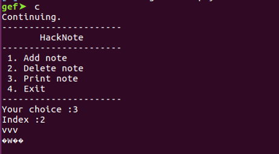

pwnable.tw 之 hacknote
1 题目
提供了一个二进制文件hacknote和一个库libc.so。
2 分析
首先分析一下这个题目的可执行程序。这是一个32bit的可执行程序，动态链接且去了符号表。该二进制程序符号表可读可写，开启了栈不可执行和canary保护，没有开启地址随机化。
执行以下试试。如下图，该程序提供了几个功能，添加/删除/打印笔记。我们用IDA看看这些功能的实现。
（1）add note功能
Add操作只能执行5次。Sub_804862B函数如下，将a1+4这个地址处的指针取出，然后利用puts将该指针指向的内容进行打印。
Chunk1和chunk2的关系如下图所示：
（2）delete note功能（这里存在漏洞点）
可以看到，delete函数将chunk2和chunk1释放掉后，并没有将指向各chunk的指针ptr[v1]置NULL，导致了悬空指针的产生。
（3）print note功能
3 利用
利用主要从两个方面去考虑（以第2节中chunk1和chunk2的图为例）：
1、puts的内容就是chunk2中的内容，因此考虑将chunk2中的内容覆盖为我们想要的东西。如libc中某个函数的地址，这样我们就可以计算得到libc的基址，从而知道任意一个libc函数在动态执行时的地址。
2、chunk1的的内容部分，前四个字节是一个函数指针，如果我们能控制这个chunk的前四个字节，就可以实现任意地址执行，劫持EIP。然而chunk1的内容并非我们能轻易改动的，因此需要结合glibc的堆管理机制中存在的漏洞，使chunk1的内容变得可控，且依然满足原来可执行的特性。从这里可以看出，我们需要两个不同的对象操作同一块内容，本质就是UAF。
3.1 获取libc基址
3.1.1 本地调试时libc的基址
本地调试时，可以在gdb中方便地获取到libc的基址，为0xf7e07000。
3.1.2 本地动态调试，获取libc中main_arena结构体中top的地址
Unsorted bin有一个特性，就是链表中第一个chunk的fd和bk均指向main_arena结构体中的top位置。因此只要我们泄露出这个地址，加上题目提供的libc，就可以轻松计算出libc在实际场景中的基址了。
首先add一个64字节的note，再add一个10字节的note，然后delete掉第一个note。此举的目的是使第一个note中大于fastbin的堆块不被top chunk给合并掉，从而该堆块可以进入unsorted bin。
再次申请64字节的空间，堆管理器会把unsorted bin中的chunk再次分配给我们，此时index 2和index 0指向同一块堆内存区域。此时输入的内容只要不覆盖到unsorted bin中那个chunk的bk位置，就可以在成功分配后，调用print打该内存区域，获得main_arena中top的地址（地址是不可显示字符，所以显示乱码）。

3.1.3 远端的libc中top相对libc基址的偏移
Libc库中的Malloc_trim函数中存在main_arena结构体，如下图位置：
查看main_arena在libc库中的偏移为0x001B0780。按照main_arena结构体与unsorted bin的关系（如下图），可知第一个被归档到unsorted bin的chunk，其fd与bk应当指向0x001B0780+0x30=0x001B07B0。
因此unsorted bin中返回的值，与libc基址的偏移为0x001B07B0。
那么libc_base = addr(dongtai_top) – 0x001B07B0，因此只需要用3.1.2中的方法将top的地址泄露出来，就可以计算出libc的基址啦。
[update]ps.另一种确切寻找top位置与main arena距离的方法：
3.2 劫持EIP
思路：申请note时会建立chunk1（8byte）和chunk2（跟chunk1不同的大小就行），若再申请一个note，此时又会建立chunk1
和chunk2。将这两个note删除后，chunk1和chunk1会被链到同一大小（8byte）的fastbin上，chunk2和chunk2会被链到其他大小的fastbin上。如果此时再申请一个8byte的note，就会将chunk1`和chunk1分别作为puts函数堆和内容堆。这个时候，chunk1被index 0和index2同时锁定。我们通过index 2 更改chunk1中的内容，然后通过index 0 去执行被替换掉的函数指针。
具体操作如下：
先申请两个大小为30的note，然后删除掉这两个note
再add一个大小为8的note，此时会将fastbin上大小为8的chunk进行分配。如下图，从上往下，第一个chunk已经被写入555了。
此时print 2得到如下结果。print 0 会报段错误，eip被覆盖成了555（即最后申请大小为8的堆时输入的content）。说明我们可以通过这种方式控制eip指针。
EXP如下：
1 | from pwn import * |
4 记录
unsorted bin attack
https://ctf-wiki.github.io/ctf-wiki/pwn/linux/glibc-heap/unsorted_bin_attack-zh/